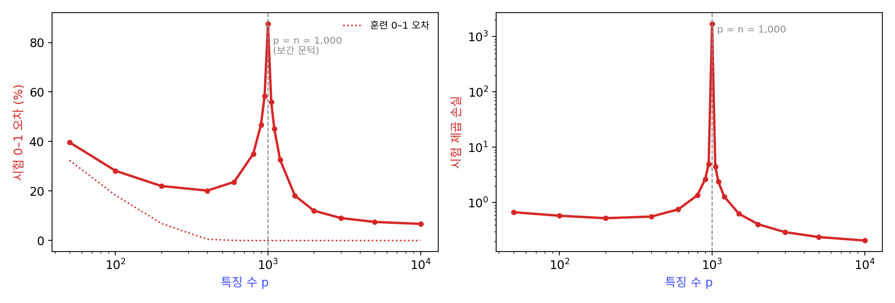
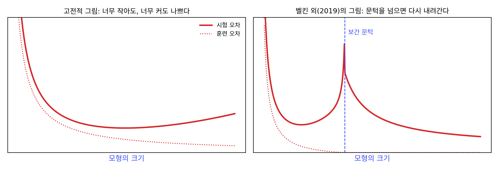
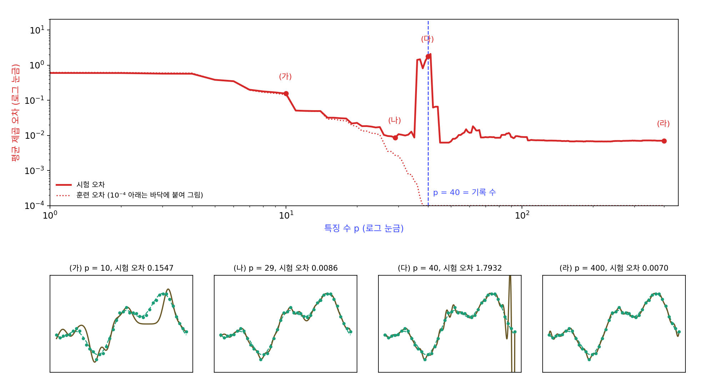
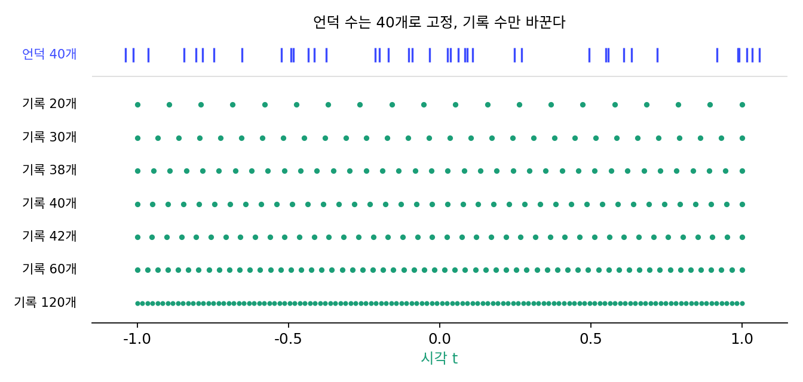
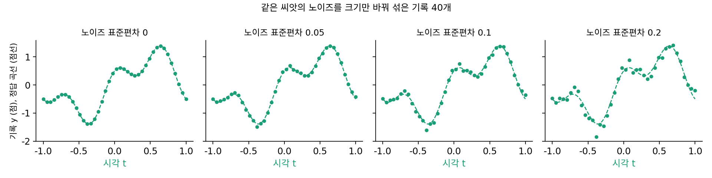
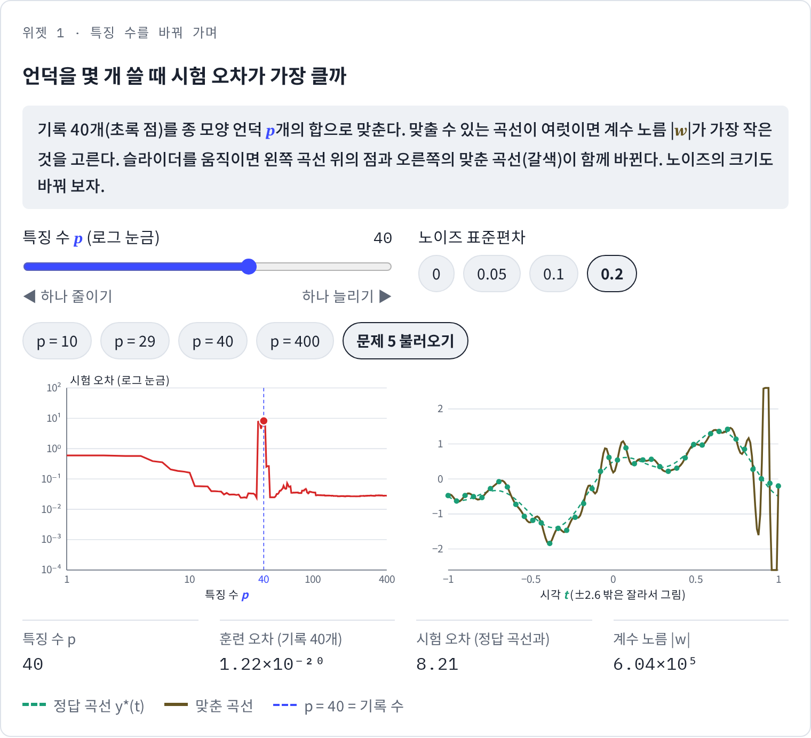

이중 하강: 문턱을 넘으면 시험 오차가 다시 내려간다
편향–분산의 U자 곡선은 언덕 수를 35까지만 그렸지만, 그 너머로 가면 기록 40개를 하나도 빠짐없이 지나는 곡선을 만들 수 있다. 옛 그림대로라면 거기서부터는 노이즈까지 전부 외우는 오버피팅이니 시험 오차가 계속 커져야 한다. 그런데 이 장의 물음에서 본 것처럼, 실제 신경망은 학습 데이터를 다 외울 만큼 크면서도 잘 맞힌다. U자 곡선의 오른쪽 끝 너머에는 무엇이 있을까?
역사: 벨킨 팀이 오른쪽 끝을 넘어가 보다
2018년 12월, 미하일 벨킨(Mikhail Belkin), 대니얼 수(Daniel Hsu), 마시위안(Siyuan Ma), 수믹 만달(Soumik Mandal)은 아카이브(arXiv)에 「현대 머신러닝의 관행과 고전적 편향–분산 맞바꿈의 화해」라는 논문을 올렸다. 논문은 2019년 미국 국립과학원 회보(PNAS)에 실렸는데, 그들이 걸린 곳은 교과서의 경고와 현장의 결과가 맞지 않는다는 점이었다. 교과서는 학습 데이터를 완벽하게 맞히는 모델은 오버피팅이라 했지만, 현장의 신경망과 커널 방법(데이터끼리 닮은 정도를 재어 예측하는 고전적인 방법)은 훈련 오차가 0이 될 때까지 학습한 뒤에도 시험 성능이 좋았다.
그들은 손글씨 숫자 MNIST 가운데 1만 장을 골라, 무작위 특징(이 절의 언덕처럼 무작위로 정해 둔 함수) p개의 선형 결합으로 숫자를 맞혔다. 특징 수가 학습 데이터 수보다 많으면 데이터를 오차 없이 맞히는 계수가 무수히 많으므로, 그 가운데 계수 노름이 가장 작은 것을 골랐다. 특징 수를 늘려 가자 시험 오차는 U자를 그리며 내려갔다가 특징 수가 데이터 수와 같은 1만이 되는 곳에서 봉우리를 쳤고, 그 너머에서 다시 내려갔다. 그들은 특징 수가 데이터 수와 같아지는 이 크기를 「보간 문턱」, 곡선 전체를 「이중 하강」 곡선이라 불렀다. 그리고 이 곡선이 교과서의 U자 곡선을 그 왼쪽 부분으로 품는다고 했다. 비슷한 봉우리는 그 전에도 물리학자들의 단순한 모델 계산과 몇몇 실험에서 보고된 적이 있었고, 벨킨 팀도 논문에 그 연구들을 적었다.


1년 뒤인 2019년 12월에는 프리텀 나키란(Preetum Nakkiran)과 하버드·오픈AI의 동료들(일리야 수츠케버 포함)이 논문을 올렸다. 제목은 「깊은 이중 하강: 큰 모델과 많은 데이터가 해가 되는 곳(Deep Double Descent: Where Bigger Models and More Data Hurt)」(ICLR 2020)이고, 그들은 같은 봉우리를 진짜 심층 신경망에서 보였다. 합성곱 신경망 ResNet-18의 너비를 바꿔 가며, 라벨의 15%를 일부러 틀리게 바꾼 CIFAR-10에 Adam으로 4,000 에포크씩(학습 데이터 전체를 한 번 훑는 것이 1 에포크) 학습했더니, 시험 오차가 너비에 따라 내려갔다 올라갔다 다시 내려갔다. 봉우리는 모델이 학습 데이터를 겨우 다 맞힐 수 있게 되는 크기에 있었고, 라벨 노이즈가 있을 때 가장 뚜렷했다. 그들은 같은 모양이 학습 에포크 수를 따라서도 나타나고, 학습 데이터를 늘리는 것이 오히려 시험 성능을 해치는 범위가 있다는 것도 보였다. 어떤 크기의 모델에서는 학습 데이터를 네 배로 늘려도 시험 성능이 나아지지 않았다.

특징 수를 데이터 수보다 많이 늘려 보기만 하면 되는 일이잖아요. 왜 2018년에야 누가 해 본 거예요?

훈련 오차가 0이 되는 모델을 교과서가 뭐라고 불렀는지 떠올려 봐요.

오버피팅이요. 검증 오차가 오르기 시작하면 멈추라고 배우니까, 다들 봉우리 앞에서 멈췄겠네요. 그 너머는 재 볼 이유가 없었고요.

그 너머까지 가려면 데이터보다 큰 모델을 훈련 오차가 0이 될 때까지 학습시켜야 해요. 나키란 팀은 ResNet-18을 너비마다 4,000 에포크씩 돌렸어요.

너비 하나에 4,000 에포크요? 그걸 너비를 바꿀 때마다 처음부터 다시 했다는 거네요. 계산 예산이 없으면 엄두를 못 낼 실험이에요.
게다가 봉우리는 라벨 노이즈가 있을 때 가장 뚜렷했어요. 깨끗한 데이터에서 일찍 멈추면 잘 보이지 않는 봉우리였던 거죠.

그럼 노이즈를 섞은 기록을 끝까지 맞추는 장난감이라면 우리 언덕 맞추기로도 봉우리를 볼 수 있을까요? 언덕이 몇 개일 때 설까요?
언덕을 400개까지
편향–분산에서 쓴 장난감으로 오른쪽 끝을 넘어가 보자. 정답 곡선 y*(t) = sin(πt) + 0.5 cos(3πt)에서 노이즈(표준편차 0.1)을 섞어 잰 기록 40개 한 벌을, 무작위 자리의 종 모양 언덕 p개로 맞춘다. 맞춘 곡선은 다음 꼴이다.
p가 40보다 작으면 기록과의 제곱 오차가 가장 작은 높이를 고른다. p가 40 이상이면 기록 40개를 모두 정확히 지나는 높이가 무수히 많으므로, 그 가운데 계수 노름(높이들의 제곱합의 제곱근) |w|이 가장 작은 것을 고른다(최소 노름 해). 시험 오차는 정답 곡선과의 제곱 차이를 시험 시각 801개에서 평균한 값이다.
| 언덕 수 p | 10 | 29 | 38 | 40 | 41 | 42 | 45 | 100 | 400 |
|---|---|---|---|---|---|---|---|---|---|
| 훈련 오차 | 0.1435 | 0.0027 | 0.00006 | 0 | 0 | 0 | 0 | 0 | 0 |
| 시험 오차 | 0.1547 | 0.0086 | 0.8106 | 1.7932 | 2.0799 | 0.0619 | 0.0062 | 0.0090 | 0.0070 |
p = 29까지는 편향–분산의 U자 그대로 내려간다(이 기록 한 벌에서도 p = 36까지 가운데 가장 낮은 곳이 29이고 0.0086이다). 언덕이 40개에 다가가면 시험 오차가 갑자기 백 배 넘게 뛰어, p = 41에서 2.0799로 U자의 최저점보다 243배 크다. 훈련 오차가 처음 0이 되는 곳이 p = 40이다. 언덕 수가 기록 수와 같아져 40개의 점을 모두 지나야 하는 바로 그 언저리에서 봉우리가 선다. 그리고 몇 개만 더 넘어가면 시험 오차는 다시 내려가, p = 45에서 0.0062, p = 400에서 0.0070으로 U자의 최저점 0.0086보다 낮다. 훈련 오차는 그동안 내내 0이므로, 기록을 다 외운 모델들 사이에서도 시험 오차가 이렇게 다른 것이다.
시험 오차가 이렇게 한 번 내려갔다가 기록 수 언저리에서 치솟고 다시 내려가는 모양을 이중 하강 (U자 너머의 두 번째 내리막 / double descent)이라 하고, 훈련 오차가 처음 0이 되는 모델 크기를 보간 문턱이라 한다. 보간은 「주어진 점을 모두 지나게 잇기」라는 뜻이다.

그림 아래 칸의 (다)와 (라)를 나란히 보자. 둘 다 기록 40개를 다 지나는데, 언덕이 40개일 때는 점 사이에서 곡선이 화면 밖까지 튀고 400개일 때는 매끈하다. 계수 노름도 p = 40에서 309,671이고 p = 400에서 79다. 언덕이 기록 수와 같은 40개면 점을 다 지나는 방법이 하나뿐이라 그 하나가 아무리 사나워도 받아들여야 한다. 언덕이 넉넉하면 점을 다 지나는 방법이 많아서, 그 가운데 가장 얌전한 것을 고를 수 있다. 왜 하필 문턱에서 그 「하나뿐인 방법」이 그렇게 사나워지는지는 특잇값으로 따져 볼 일이다.
ML에서: 모델을 키우면 더 좋아진다는 말의 근거
CIFAR-10에 ResNet-18을 쓰는 것처럼 학습 데이터 수보다 파라미터가 훨씬 많은 모델을 망설이지 않고 쓰는 관행은, 이중 하강의 오른쪽 내리막으로 설명되곤 한다. 나키란 팀의 ResNet-18 실험에서도 가장 넓은 모델(너비 64, 표준 ResNet-18)은 논문 그림에서 봉우리를 지나 시험 오차가 다시 낮아진 쪽에 있었다. 이 그림으로 보면 오버피팅 경고는 틀렸다기보다 반쪽이었는데, 위험한 것이 「큰 모델」이 아니라 「데이터를 겨우 다 외울 수 있을 만큼의 크기」이기 때문이다. 문턱은 언덕 수와 기록 수가 함께 정하는 자리였으니, 모델 크기는 그대로 두고 데이터만 늘리면 어떻게 될까?
문제 4. 데이터를 늘렸더니 나빠졌다
언덕 수를 p = 40으로 고정하고, 기록의 수를 바꾼다(시각은 −1부터 1까지 같은 간격, 노이즈 표준편차 0.1). 기록이 20, 30, 38, 40, 42, 60, 120개일 때 시험 오차는 0.0237, 0.1660, 19.6218, 3.3916, 0.0164, 0.0057, 0.0043이었다. (가) 기록이 20개에서 38개로 늘 때 무슨 일이 생겼는가? (나) 봉우리는 어디에 있고, 그 자리는 무엇이 정하는가? (다) 기록이 20개일 때는 왜 0.0237로 꽤 좋았을까?

데이터가 많을수록 좋은 건 당연한데, 표가 이상해요. 20개일 때 0.0237이던 게 38개에서는 19.6이에요. 800배 넘게 나빠졌어요.
언덕 수와 기록 수의 관계를 보세요. 언덕을 키우던 표에서 봉우리는 어디 있었죠?

언덕 수가 기록 수 40에 닿을 때요. 여기는 언덕을 40개로 고정하고 기록을 늘렸으니 기록이 40개 언저리에 올 때 같은 봉우리가 생기는 거네요. 38개, 40개가 봉우리고, 42개만 돼도 0.0164로 내려와요.

(다)는 기록이 20개면 언덕 40개가 넉넉한 쪽이라서야. 점을 다 지나는 방법이 많으니까 최소 노름으로 얌전한 걸 고를 수 있어. 언덕을 키우던 표의 오른쪽 내리막에 있는 거야.
그럼 「데이터를 늘리면 좋아진다」는 말은 틀린 걸까요?

기록이 120개면 0.0043으로 표에서 가장 좋아요. 끝까지 늘리면 맞는 말인데, 가는 길에 봉우리를 하나 넘어야 해요. 봉우리를 정하는 건 언덕 수와 기록 수의 비라서, 둘 가운데 무엇을 바꿔도 문턱을 지나갈 수 있어요.

나키란 논문 제목에 「많은 데이터가 해가 되는 곳」이 들어간 게 이거구나. 데이터를 더 모았는데 성능이 떨어지면 모델 크기부터 같이 봐야겠어요. 실험 보고서에 샘플을 늘렸더니 결과가 나빠졌다고 썼다가, 조교님한테 조건을 하나만 바꾼 게 맞느냐는 질문을 받은 적이 있어요.
문제 5. 라벨 노이즈와 봉우리
기록의 노이즈 표준편차만 바꾸고(노이즈의 모양은 같은 씨앗) 언덕 수 p = 29, 40, 400의 시험 오차를 잰다. (가) 노이즈가 0이면 봉우리는 남는가? (나) 노이즈 표준편차를 0.05, 0.1, 0.2로 키우면 p = 40의 시험 오차는 어떻게 바뀌는가? (다) 실제 데이터에서 라벨 노이즈는 무엇에 해당하고, 나키란 팀은 왜 라벨을 일부러 틀리게 바꿨을까? (풀어 본 뒤 위젯 1의 노이즈 단추와 「문제 5 불러오기」로 확인해 보자.)

노이즈가 0이면 기록이 정답 곡선 위에 그대로 놓여 있으니까 다 지나도 문제가 없겠죠. 봉우리는 없어질 것 같아요.
위젯에서 노이즈를 0으로 놓고 p = 40을 보세요.

0.0359예요. p = 29의 0.0032보다 열 배 넘게 커요. 봉우리가 작아지긴 했는데 없어지지는 않았어요. p = 400은 0.000000이고요.
노이즈가 없어도 언덕 40개로 40개 점을 꼭 지나야 하는 건 같으니까, 점 사이에서 출렁이는 건 남는 거구나. (나)는 0.05에서 0.3319, 0.1에서 1.7932, 0.2에서 8.2119야. 노이즈 표준편차가 두 배가 될 때마다 다섯 배 안팎으로 커져.
p = 400도 노이즈가 두 배가 될 때마다 네 배쯤, p = 29는 두세 배 커져요. 그럼 세 자리의 차이는 어디서 보죠? 노이즈 표준편차가 0.1일 때 노이즈의 분산은 0.01이에요. 시험 오차가 그 몇 배인지 보세요.
p = 29는 0.0086이니까… 0.86배예요. 노이즈의 분산보다 작아요.
400은 0.0070이라 0.70배야. 둘 다 기록의 노이즈보다도 작은 오차로 정답 곡선을 맞혔네.

그런데 p = 40은 1.7932라 179배예요. 노이즈가 커지면 셋 다 따라 커지지만, 문턱에서는 노이즈를 백 배 넘게 부풀려서 따라가는 거예요.
실제 데이터의 라벨 노이즈는 사람이 잘못 붙인 라벨이네요. 나키란 팀은 그걸 15% 일부러 섞어서 봉우리가 잘 보이게 한 거고요. 라벨이 깨끗한 데이터만 써 보고 이중 하강은 없다고 하면 안 되겠어요. 설문 조사 과제에서 응답 실수가 많은 문항만 결과가 들쭉날쭉했던 것과 비슷해요.
위젯 1에서 문제 5 설정을 불러와, 노이즈를 키운 기록을 언덕 40개로 맞춘 곡선이 점 사이에서 얼마나 튀는지 확인해 보세요.
